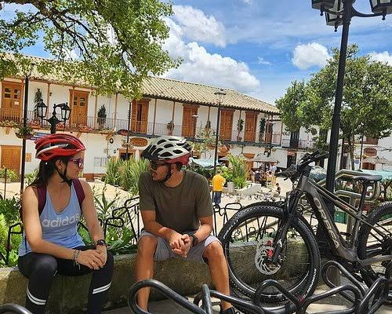

Nivel fácil
Luces del Centro
10 km · 2 horas · Punto de encuentro: sede de Rueda Libre.
$55.000
InscríbeteSistema visual
Botones, tarjetas, alertas y campos que comparten colores, bordes, tipografía y espaciado.

10 km · 2 horas · Punto de encuentro: sede de Rueda Libre.
$55.000
InscríbeteTodas las salidas de Rueda Nocturna comienzan a las 7:30 p. m.
Tu formulario está preparado para validar los datos antes de enviarlo.
Llega con anticipación y sigue las recomendaciones del guía.